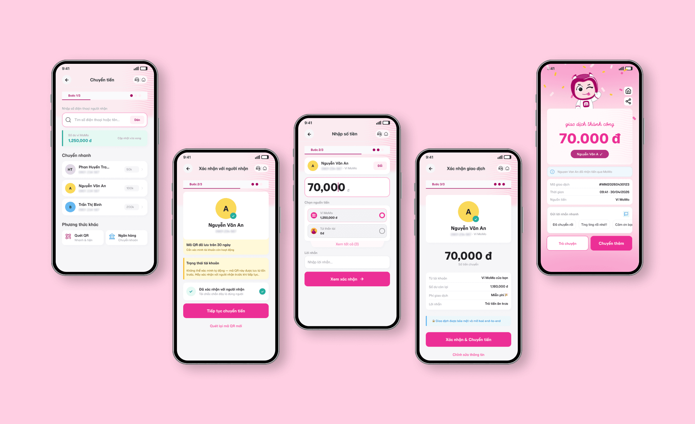
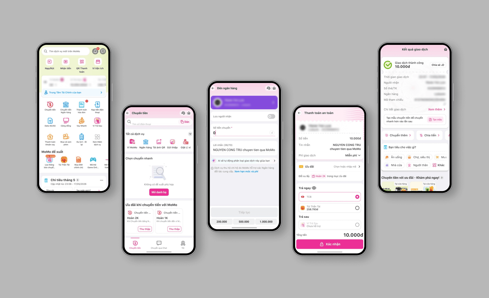

MOMO TRANSFER — ĐỀ XUẤT CẢI THIỆN ĐỘ RÕ RÀNG & AN TÂM.
Case study tập trung vào những thông tin người dùng cần kiểm tra trước khi xác nhận một giao dịch.

BỐI CẢNH VÀ GIẢ THUYẾT THIẾT KẾ
Theo Decision Lab năm 2024, MoMo có hơn 40 triệu người dùng. Tôi bắt đầu case study sau khi nhận thấy màn hình chuyển tiền hiển thị nhiều nhóm chức năng với mức độ nổi bật gần giống nhau. Dù đã sử dụng MoMo nhiều lần, tôi vẫn mất thời gian xác định điểm bắt đầu phù hợp.
Từ quan sát đó, tôi đặt giả thuyết rằng thứ bậc thông tin của màn hình có thể được làm rõ hơn. Đây là concept cá nhân, chưa triển khai trên MoMo.


Tôi khảo sát 11 người qua Google Forms, tự thực hiện các tác vụ chuyển tiền và phân tích giao diện từ ảnh chụp màn hình. Với quy mô mẫu nhỏ, kết quả được dùng để phát hiện vấn đề cần kiểm tra thêm, không đại diện cho toàn bộ người dùng MoMo.
Phần lớn người tham gia nhìn chung hài lòng, dù vẫn mô tả một số điểm gây do dự trong quá trình sử dụng.
Một số lý do được nhắc đến liên quan đến mật độ thông tin, kích thước chữ và số lượng chức năng.
Đây là hành vi hợp lý trong giao dịch tài chính. Cơ hội thiết kế là giúp đối chiếu người nhận, số tiền và nguồn tiền nhanh, chính xác hơn.
CÁC NHẬN ĐỊNH CHÍNH
01 / HỖ TRỢ KIỂM TRA GIAO DỊCH
Người tham gia đều kiểm tra lại trước khi xác nhận. Giao diện nên tổ chức thông tin quan trọng theo thứ tự đọc rõ ràng để giúp phát hiện sai lệch.
02 / THỬ THÊM VỚI NGƯỜI LỚN TUỔI
6/11 người tham gia chưa sẵn sàng giới thiệu ứng dụng cho bố mẹ. Phản hồi này gợi ý cần thử trực tiếp với người lớn tuổi, thay vì kết luận thay cho họ.
03 / NGỮ CẢNH CHO QR ĐÃ LƯU
Trải nghiệm cá nhân cho thấy người dùng có thể băn khoăn về QR đã lưu. Tôi đưa tình huống này vào prototype để kiểm tra trong vòng usability test tiếp theo.
3 khu vực hiển thị ngang hàng không có thứ tự ưu tiên
Ba khu vực cạnh tranh thị giác có thể khiến người dùng khó nhận ra hành động đầu tiên. Đây là vấn đề cần kiểm chứng thêm.
11/11 NGƯỜI THAM GIA KIỂM TRA LẠI THÔNG TIN
Màn hình xác nhận có thể giúp người dùng đối chiếu các thông tin quan trọng nhanh hơn, đồng thời giữ bước kiểm tra chủ động.
Người dùng phải thoát ra trang chủ kiểm tra số dư
Việc phải rời luồng để kiểm tra số dư tạo thêm thao tác. Concept đề xuất hiển thị số dư tại bước nhập số tiền.
Không rõ mã QR đã lưu trong danh bạ có còn hiệu lực không
Người dùng có thể cần biết dữ liệu người nhận vừa được xác thực hay chỉ lấy từ lịch sử. Phương án cần được đối chiếu với giới hạn kỹ thuật và quy tắc xác thực thực tế.
CẦN THỬ NGHIỆM TRỰC TIẾP VỚI NGƯỜI LỚN TUỔI
6/11 người tham gia chưa sẵn sàng giới thiệu cho bố mẹ. Cần thử nghiệm trực tiếp để hiểu ảnh hưởng của chữ nhỏ, mật độ thông tin và số lượng chức năng.
Giữ nguyên visual identity của MoMo; màu sắc tham khảo MoMo Brandbook chính thức (momopartners.m-n.associates).
USER FLOW / MỖI MÀN HÌNH MỘT TÁC VỤ
Luồng theo nguyên tắc “one task per screen” với ba điểm vào: nhập số điện thoại, quét QR và chọn từ danh bạ. Chỉ báo “Bước X/3” giúp người dùng biết mình đang ở đâu.
MỞ SƠ ĐỒ TRÊN FIGJAM ↗COLOR SYSTEM / MOMO BRANDBOOK
TYPOGRAPHY / MOMO TRUST SANS
MoMo Trust Sans được sử dụng xuyên suốt, tham khảo Design System công bố của MoMo.


CHỌN PHƯƠNG THỨC CHUYỂN TIỀN
Search bar viền hồng là hành động chính; số dư được hiển thị trong luồng. Nhóm dropdown 10 icon của phiên bản cũ được bỏ khỏi phương án thiết kế để tập trung vào tác vụ chuyển tiền.

QR VALIDATION THEO NGỮ CẢNH
Prototype thể hiện ba trạng thái: hợp lệ, QR đã lưu trên 30 ngày cần kiểm tra và không hợp lệ. Quy tắc xác thực và ngưỡng cảnh báo cần được kiểm chứng cùng đội ngũ kỹ thuật.

NHẬP SỐ TIỀN & CHỌN NGUỒN TIỀN
Trong prototype, thẻ số dư hiển thị “Khả dụng” và “Còn lại sau giao dịch” theo số tiền nhập. Lựa chọn nguồn tiền được đặt tại bước này để người dùng có đủ ngữ cảnh.

MÀN HÌNH XÁC NHẬN VỚI TRUST SIGNALS
Avatar, tên người nhận, số điện thoại hoặc số tài khoản, số tiền và nguồn tiền được nhóm theo thứ tự đối chiếu. Mục tiêu là giúp người dùng kiểm tra nhanh mà vẫn duy trì bước xác nhận chủ động.

MÀN HÌNH THÀNH CÔNG CHO THU NGÂN / NGƯỜI BÁN
Khi thanh toán ở nơi không có loa thông báo, tôi thường đưa màn hình cho người bán xem ở khoảng cách gần. Thiết kế ưu tiên màu hồng MoMo, trạng thái thành công với confetti và số tiền cỡ 52px. Khả năng đọc cần được thử ở các khoảng cách và điều kiện ánh sáng khác nhau.
SO SÁNH PHƯƠNG ÁN THIẾT KẾ


CHÚ Ý ĐẾN NHỮNG THAO TÁC NGẦM CỦA NGƯỜI DÙNG
Case study giúp tôi chú ý hơn đến những thao tác nhỏ mà người dùng tự thêm vào quy trình, như đọc lại tên người nhận hoặc đưa màn hình thành công cho người bán xem. Những hành vi này chưa tự động chứng minh giao diện có vấn đề. Chúng là tín hiệu để đặt câu hỏi, xây dựng prototype và kiểm tra với người dùng trong bước tiếp theo.